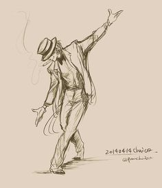
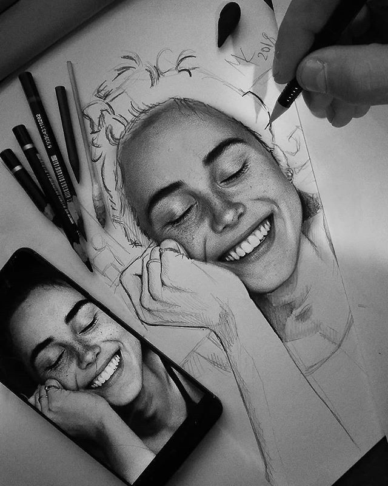

AQUI VOCÊ ENCONTRARA OQUE PRECISA PARA TORNA SEUS DESENHOS MAIS INTERRESANTES
Desenho de semi-realismo com sombreado de risco baixo
Desenho de cartoon com sombreado em risco médio
Desenho de realismo com sombrendo em ultra-realismo
Desenho semi-realista com sombreado de rachura media e esfume leve
Desenho de Realismo-médio com sombreado em esumo forte
Desenho de realismo com combreado em rachura forte e esfume leve
Desenho de realismo animatorio com sombreado de rachura e esfume digital
Desenhos de cartoon com sombreado improvisado
Desenho realista com sombreado digital médio com rachura
Desenho animatorio com sombreado leve com sobsombreado em rachura leve
Desenho em hiper realismo com sombreado realista + detalhes realista
Desenho virtual com sombreado realista digital
Desenho realista com sombreado em risco + fios curtos, com foco em parte concentrada
Desenho Realista com sombreado em esfume médio
Desenho com sombreado em riscos
Desenhos Semi-realista com sombreado em rachura alta
Desenho Semi-realista com sombreado medio
Desenho de ilusão com pespectiva humana
Desenho realista com sombreado em sombra alta e media
Thiago C.souza